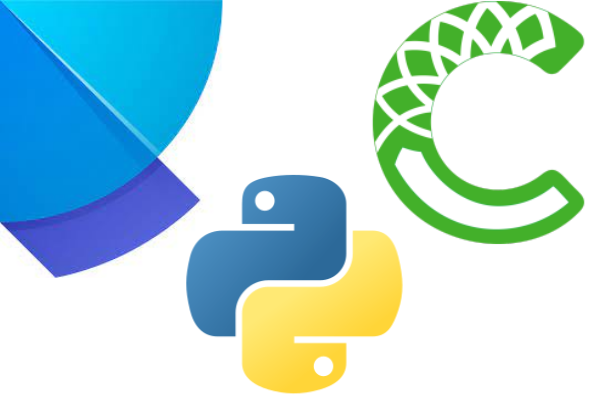
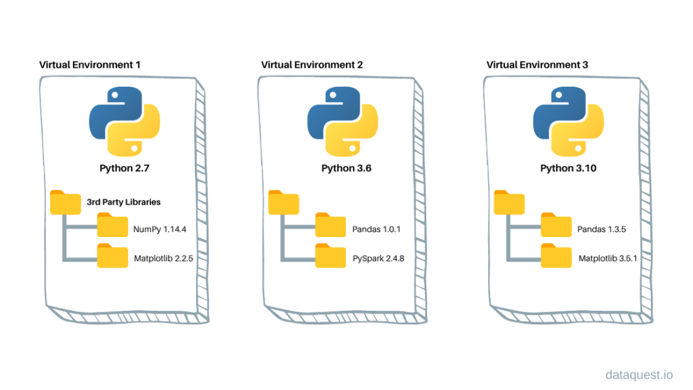

2 Python Environments and Package Management
2.1 Learning Objectives
Managing Python environments and packages is essential for reproducible, error-free data science. Understanding these concepts will help you avoid common pitfalls and collaborate more effectively. This chapter will guide you through the tools and best practices for setting up, sharing, and troubleshooting Python environments.
By the end of this chapter , you will be able to:
- Explain why virtual environments are important.
- Install essential data science packages in your Python environment.
- Create a
requirements.txtfile and use it to quickly recreate an environment.
- Recognize why dependency conflicts happen.
- Describe how tools like
condaorpoetrycan help resolve dependency conflicts.
2.2 Data Science packages in Python
Python has a rich ecosystem of packages that make data analysis easier and more powerful.
In this course, you will install and use several core packages:
- NumPy → numerical computing and array operations
- pandas → data manipulation and analysis
- Matplotlib → data visualization
- Seaborn → statistical data visualization (built on top of Matplotlib)
These packages give you the essential tools to load, clean, analyze, and visualize data.
👉 Before using them, you need to install them in your Python environment.
In your previous VS Code setup lesson, you created a Python environment using .venv and selected it as the kernel to run your notebook. This created a folder called .venv, which contains: - A dedicated Python interpreter for your project - A Lib folder where all packages you install are stored
Any packages you install (e.g., with pip install ...) will only affect this environment, keeping your project isolated from others.
Using virtual environments is considered best practice for Python development, especially in data science projects. This isolation helps you: - Avoid version conflicts between packages - Keep project dependencies separate - Make your code more reproducible and shareable
Before we dive in, let’s clarify what a Python environment is and why isolation matters.
2.3 Python Virtual Environments
A Python virtual environment is an isolated workspace with its own Python interpreter and its own set of installed packages.

This isolation makes it easy to manage dependencies for different projects and prevents package version conflicts.
Why use virtual environments?
- Keep each project’s dependencies separate
- Avoid breaking code by accidentally upgrading/downgrading packages
- Share your code with others and ensure it works the same way on their machine
Virtual environments are a key tool for professional, reproducible Python workflows.
2.4 Install Data Science Packages Within Your Environment
Python’s power for data science comes from its rich ecosystem of packages. These packages provide essential tools for scientific computing, data analysis, visualization, and machine learning.
Packages like numpy, pandas, and matplotlib are not included in the Python standard library—you need to install them in your environment before you can use them.
Test your setup: Add the following code to your test.ipynb notebook to check if your environment is ready:
import numpy as np
import pandas as pd
print("Setup complete!")👉 If you see a ModuleNotFoundError, it means the package is not installed in your current environment. Use pip install to add missing packages.
Tip: Always install packages inside your active virtual environment to keep your project isolated and reproducible.
2.4.1 How to Install Packages
There are two main ways to install data science packages in your environment:
2.4.1.1 Installing from the Terminal
- Open a New Terminal: Check that your terminal is using the same environment as your notebook kernel.
- If you see
(.venv)at the start of the prompt, your virtual environment is active and matches the notebook kernel. - If you see
(base), it means the base conda environment is active (common if you have Anaconda installed). - To confirm which Python is being used, run:
- On macOS/Linux:
which python - On Windows:
where.exe python
- On macOS/Linux:
- If you see
Note: If you have both Anaconda and VS Code installed, environments can sometimes conflict. If the terminal and notebook use different environments, packages may be installed in the wrong place, causing import errors in your notebook.
Install packages with pip:
pip install numpy pandas
2.4.1.2 Installing from the Notebook
You can also install packages directly from a Jupyter Notebook cell using a magic command. This is convenient for quick installs without leaving the notebook interface.
Add a new code cell and run:
pip install numpy pandas
Best Practice: Always make sure you are installing packages into the correct environment. Double-check your kernel and terminal environment before running installation commands.
2.4.2 Backing Up and Sharing Your Environment
Reproducibility is a cornerstone of good data science. To ensure your code works for you, your collaborators, and on other machines, you need a way to recreate your Python environment exactly.
Backing up your environment makes it easy to share your work and avoid “it works on my machine” problems.
How to back up your environment:
Step 1: Create a requirements.txt file
- This file lists all installed packages and their versions, so anyone can recreate your environment.
Run the following command in your terminal to list all installed packages and their versions:
Code
pip freezeasttokens==2.4.1
colorama==0.4.6
comm==0.2.2
contourpy==1.3.0
cycler==0.12.1
debugpy==1.8.6
decorator==5.1.1
executing==2.1.0
fonttools==4.54.1
ipykernel==6.29.5
ipython==8.27.0
jedi==0.19.1
jupyter_client==8.6.3
jupyter_core==5.7.2
kiwisolver==1.4.7
matplotlib==3.9.2
matplotlib-inline==0.1.7
nest-asyncio==1.6.0
numpy==2.1.1
packaging==24.1
pandas==2.2.3
parso==0.8.4
pillow==10.4.0
platformdirs==4.3.6
prompt_toolkit==3.0.48
psutil==6.0.0
pure_eval==0.2.3
Pygments==2.18.0
pyparsing==3.1.4
python-dateutil==2.9.0.post0
pytz==2024.2
pywin32==306
pyzmq==26.2.0
six==1.16.0
stack-data==0.6.3
tornado==6.4.1
traitlets==5.14.3
tzdata==2024.2
wcwidth==0.2.13
Note: you may need to restart the kernel to use updated packages.Using the redirection operator >, you can save the output of pip freeze to a requirement.txt. This file can be used to install the same versions of packages in a different environment.
Code
pip freeze > requirement.txtNote: you may need to restart the kernel to use updated packages.Let’s check whether the requirement.txt is in the current working directory
Code
%ls Volume in drive C is Windows
Volume Serial Number is A80C-7DEC
Directory of c:\Users\lsi8012\OneDrive - Northwestern University\FA24\303-1\test_env
09/27/2024 02:25 PM <DIR> .
09/27/2024 02:25 PM <DIR> ..
09/27/2024 07:44 AM <DIR> .venv
09/27/2024 01:42 PM <DIR> images
09/27/2024 02:25 PM 695 requirement.txt
09/27/2024 02:25 PM 21,352 venv_setup.ipynb
2 File(s) 22,047 bytes
4 Dir(s) 166,334,562,304 bytes freeStep 2: Share the file
- Send the
requirements.txtfile to your collaborator, or save it for future use.
Step 3: Recreate the environment elsewhere
On a new machine or environment, run:
pip install -r requirements.txt
Code
pip install -r requirement.txtRequirement already satisfied: asttokens==2.4.1 in c:\users\lsi8012\onedrive - northwestern university\fa24\303-1\test_env\.venv\lib\site-packages (from -r requirement.txt (line 1)) (2.4.1)
Requirement already satisfied: colorama==0.4.6 in c:\users\lsi8012\onedrive - northwestern university\fa24\303-1\test_env\.venv\lib\site-packages (from -r requirement.txt (line 2)) (0.4.6)
Requirement already satisfied: comm==0.2.2 in c:\users\lsi8012\onedrive - northwestern university\fa24\303-1\test_env\.venv\lib\site-packages (from -r requirement.txt (line 3)) (0.2.2)
Requirement already satisfied: contourpy==1.3.0 in c:\users\lsi8012\onedrive - northwestern university\fa24\303-1\test_env\.venv\lib\site-packages (from -r requirement.txt (line 4)) (1.3.0)
Requirement already satisfied: cycler==0.12.1 in c:\users\lsi8012\onedrive - northwestern university\fa24\303-1\test_env\.venv\lib\site-packages (from -r requirement.txt (line 5)) (0.12.1)
Requirement already satisfied: debugpy==1.8.6 in c:\users\lsi8012\onedrive - northwestern university\fa24\303-1\test_env\.venv\lib\site-packages (from -r requirement.txt (line 6)) (1.8.6)
Requirement already satisfied: decorator==5.1.1 in c:\users\lsi8012\onedrive - northwestern university\fa24\303-1\test_env\.venv\lib\site-packages (from -r requirement.txt (line 7)) (5.1.1)
Requirement already satisfied: executing==2.1.0 in c:\users\lsi8012\onedrive - northwestern university\fa24\303-1\test_env\.venv\lib\site-packages (from -r requirement.txt (line 8)) (2.1.0)
Requirement already satisfied: fonttools==4.54.1 in c:\users\lsi8012\onedrive - northwestern university\fa24\303-1\test_env\.venv\lib\site-packages (from -r requirement.txt (line 9)) (4.54.1)
Requirement already satisfied: ipykernel==6.29.5 in c:\users\lsi8012\onedrive - northwestern university\fa24\303-1\test_env\.venv\lib\site-packages (from -r requirement.txt (line 10)) (6.29.5)
Requirement already satisfied: ipython==8.27.0 in c:\users\lsi8012\onedrive - northwestern university\fa24\303-1\test_env\.venv\lib\site-packages (from -r requirement.txt (line 11)) (8.27.0)
Requirement already satisfied: jedi==0.19.1 in c:\users\lsi8012\onedrive - northwestern university\fa24\303-1\test_env\.venv\lib\site-packages (from -r requirement.txt (line 12)) (0.19.1)
Requirement already satisfied: jupyter_client==8.6.3 in c:\users\lsi8012\onedrive - northwestern university\fa24\303-1\test_env\.venv\lib\site-packages (from -r requirement.txt (line 13)) (8.6.3)
Requirement already satisfied: jupyter_core==5.7.2 in c:\users\lsi8012\onedrive - northwestern university\fa24\303-1\test_env\.venv\lib\site-packages (from -r requirement.txt (line 14)) (5.7.2)
Requirement already satisfied: kiwisolver==1.4.7 in c:\users\lsi8012\onedrive - northwestern university\fa24\303-1\test_env\.venv\lib\site-packages (from -r requirement.txt (line 15)) (1.4.7)
Requirement already satisfied: matplotlib==3.9.2 in c:\users\lsi8012\onedrive - northwestern university\fa24\303-1\test_env\.venv\lib\site-packages (from -r requirement.txt (line 16)) (3.9.2)
Requirement already satisfied: matplotlib-inline==0.1.7 in c:\users\lsi8012\onedrive - northwestern university\fa24\303-1\test_env\.venv\lib\site-packages (from -r requirement.txt (line 17)) (0.1.7)
Requirement already satisfied: nest-asyncio==1.6.0 in c:\users\lsi8012\onedrive - northwestern university\fa24\303-1\test_env\.venv\lib\site-packages (from -r requirement.txt (line 18)) (1.6.0)
Requirement already satisfied: numpy==2.1.1 in c:\users\lsi8012\onedrive - northwestern university\fa24\303-1\test_env\.venv\lib\site-packages (from -r requirement.txt (line 19)) (2.1.1)
Requirement already satisfied: packaging==24.1 in c:\users\lsi8012\onedrive - northwestern university\fa24\303-1\test_env\.venv\lib\site-packages (from -r requirement.txt (line 20)) (24.1)
Requirement already satisfied: pandas==2.2.3 in c:\users\lsi8012\onedrive - northwestern university\fa24\303-1\test_env\.venv\lib\site-packages (from -r requirement.txt (line 21)) (2.2.3)
Requirement already satisfied: parso==0.8.4 in c:\users\lsi8012\onedrive - northwestern university\fa24\303-1\test_env\.venv\lib\site-packages (from -r requirement.txt (line 22)) (0.8.4)
Requirement already satisfied: pillow==10.4.0 in c:\users\lsi8012\onedrive - northwestern university\fa24\303-1\test_env\.venv\lib\site-packages (from -r requirement.txt (line 23)) (10.4.0)
Requirement already satisfied: platformdirs==4.3.6 in c:\users\lsi8012\onedrive - northwestern university\fa24\303-1\test_env\.venv\lib\site-packages (from -r requirement.txt (line 24)) (4.3.6)
Requirement already satisfied: prompt_toolkit==3.0.48 in c:\users\lsi8012\onedrive - northwestern university\fa24\303-1\test_env\.venv\lib\site-packages (from -r requirement.txt (line 25)) (3.0.48)
Requirement already satisfied: psutil==6.0.0 in c:\users\lsi8012\onedrive - northwestern university\fa24\303-1\test_env\.venv\lib\site-packages (from -r requirement.txt (line 26)) (6.0.0)
Requirement already satisfied: pure_eval==0.2.3 in c:\users\lsi8012\onedrive - northwestern university\fa24\303-1\test_env\.venv\lib\site-packages (from -r requirement.txt (line 27)) (0.2.3)
Requirement already satisfied: Pygments==2.18.0 in c:\users\lsi8012\onedrive - northwestern university\fa24\303-1\test_env\.venv\lib\site-packages (from -r requirement.txt (line 28)) (2.18.0)
Requirement already satisfied: pyparsing==3.1.4 in c:\users\lsi8012\onedrive - northwestern university\fa24\303-1\test_env\.venv\lib\site-packages (from -r requirement.txt (line 29)) (3.1.4)
Requirement already satisfied: python-dateutil==2.9.0.post0 in c:\users\lsi8012\onedrive - northwestern university\fa24\303-1\test_env\.venv\lib\site-packages (from -r requirement.txt (line 30)) (2.9.0.post0)
Requirement already satisfied: pytz==2024.2 in c:\users\lsi8012\onedrive - northwestern university\fa24\303-1\test_env\.venv\lib\site-packages (from -r requirement.txt (line 31)) (2024.2)
Requirement already satisfied: pywin32==306 in c:\users\lsi8012\onedrive - northwestern university\fa24\303-1\test_env\.venv\lib\site-packages (from -r requirement.txt (line 32)) (306)
Requirement already satisfied: pyzmq==26.2.0 in c:\users\lsi8012\onedrive - northwestern university\fa24\303-1\test_env\.venv\lib\site-packages (from -r requirement.txt (line 33)) (26.2.0)
Requirement already satisfied: six==1.16.0 in c:\users\lsi8012\onedrive - northwestern university\fa24\303-1\test_env\.venv\lib\site-packages (from -r requirement.txt (line 34)) (1.16.0)
Requirement already satisfied: stack-data==0.6.3 in c:\users\lsi8012\onedrive - northwestern university\fa24\303-1\test_env\.venv\lib\site-packages (from -r requirement.txt (line 35)) (0.6.3)
Requirement already satisfied: tornado==6.4.1 in c:\users\lsi8012\onedrive - northwestern university\fa24\303-1\test_env\.venv\lib\site-packages (from -r requirement.txt (line 36)) (6.4.1)
Requirement already satisfied: traitlets==5.14.3 in c:\users\lsi8012\onedrive - northwestern university\fa24\303-1\test_env\.venv\lib\site-packages (from -r requirement.txt (line 37)) (5.14.3)
Requirement already satisfied: tzdata==2024.2 in c:\users\lsi8012\onedrive - northwestern university\fa24\303-1\test_env\.venv\lib\site-packages (from -r requirement.txt (line 38)) (2024.2)
Requirement already satisfied: wcwidth==0.2.13 in c:\users\lsi8012\onedrive - northwestern university\fa24\303-1\test_env\.venv\lib\site-packages (from -r requirement.txt (line 39)) (0.2.13)
Note: you may need to restart the kernel to use updated packages.Once you run the install command, all packages listed in your requirements.txt file will be installed, matching the exact versions you used in your original environment.
This ensures your code runs the same way everywhere—whether on your computer, a collaborator’s machine, or a server.
Why is this important?
- Guarantees everyone is using the same package versions, reducing errors and “works on my machine” problems.
- Makes it easy to set up your project on a new computer, server, or cloud environment.
- Simplifies troubleshooting and collaboration—everyone starts from the same setup.
Pro Tip:
- Update your
requirements.txtafter installing or upgrading packages to keep it current. - Consider version-controlling your
requirements.txtfile (e.g., with Git) so changes are tracked and shared with collaborators.
A well-maintained environment file is essential for reproducible, shareable, and professional data science projects.
2.5 Dependency Conflicts
A dependency conflict occurs when two or more packages in your Python environment require different or incompatible versions of the same library.
This can cause errors, unexpected behavior, or even break your code.
2.5.1 Why do dependency conflicts happen?
- Many Python packages rely on other packages (called dependencies) to work.
- If you install packages that depend on different versions of the same dependency, they may not work together.
- This is especially common in data science, where libraries evolve quickly and have complex interdependencies.
Example: Suppose you install two packages:
PackageArequiresnumpy==1.24.0
PackageBrequiresnumpy==2.2.0
If you install both with pip, the last specified version wins. One of the packages may then fail because it cannot use the version of numpy that was actually installed.
2.5.2 How to avoid dependency conflicts
- ✅ Use virtual environments to isolate dependencies for each project.
- ✅ Check package requirements before installing new libraries.
- ✅ Use tools like Poetry or Conda to detect and resolve conflicts automatically.
2.6 How to Resolve Conflicts and Manage Environments
2.6.1 Use conda for Robust Environment Management
conda is a powerful tool for managing both Python environments and packages, especially in data science workflows. It helps you avoid and resolve dependency conflicts by handling package versions and system dependencies more effectively than pip alone.
Why use conda?
- Create fully isolated environments for different projects
- Install packages and all their dependencies from the Anaconda repository
- Easily switch between environments for different tasks
- Export and share environment configurations for reproducibility
How conda prevents dependency conflicts:
- When you install a package, conda automatically checks for compatible versions of all dependencies and installs them together.
- If a conflict is detected, conda will warn you, suggest solutions, or prevent incompatible installations.
Essential conda commands:
Create a new environment:
conda create --name myenv numpy pandas matplotlibActivate an environment:
conda activate myenvInstall a package in an environment:
conda install seabornList all environments:
conda env listExport environment configuration:
conda env export > environment.ymlRecreate an environment from a file:
conda env create -f environment.yml
Example: Suppose you need to work on two projects that require different versions of scikit-learn. You can create two separate environments:
conda create --name projectA scikit-learn=0.24
conda create --name projectB scikit-learn=1.2Each environment will have its own compatible dependencies, so you avoid conflicts.
Summary: Using conda is highly recommended for managing complex dependencies, system-level packages, and reproducible environments in data science.
2.6.2 Use poetry for Modern Python Projects
poetry is a modern tool for managing Python dependencies and packaging. It streamlines environment setup, ensures reproducibility, and makes sharing your project easy.
Why use poetry?
- Automatically creates and manages virtual environments for each project
- Uses a
pyproject.tomlfile to specify and lock project requirements - Prevents dependency conflicts with a lock file (
poetry.lock) - Simplifies publishing packages to PyPI and sharing with others
How poetry helps with dependency management:
- Resolves and installs compatible versions of all dependencies automatically
- Keeps your environment reproducible and up-to-date
- Makes it easy to add, update, or remove packages
Essential poetry commands:
Install poetry (if not already installed):
pip install poetryCreate a new project:
poetry new myprojectAdd packages:
poetry add numpy pandas matplotlibInstall all dependencies:
poetry installRun commands inside the environment:
poetry run python script.pyUpdate dependencies:
poetry update
Example workflow:
Create a new project:
poetry new ds_project cd ds_projectAdd dependencies:
poetry add numpy pandas matplotlib seabornInstall all dependencies:
poetry installRun your code inside the poetry-managed environment:
poetry run python your_script.py
Summary: poetry is highly recommended for modern Python projects where you want reliable dependency management, easy environment setup, and reproducible results.
2.6.3 Difference Between conda and poetry
Both conda and poetry are tools for managing Python environments and dependencies, but they have different strengths and use cases.
conda:
- Manages both Python environments and packages, including non-Python dependencies (e.g., C libraries, compilers)
- Works with multiple languages (Python, R, etc.)
- Uses the Anaconda repository, which includes many scientific and data science packages
- Great for data science workflows, especially when you need packages with compiled code or system-level dependencies
- Handles complex dependency resolution and environment isolation
poetry:
- Focuses on Python projects and packages
- Uses
pyproject.tomlandpoetry.lockfor reproducible builds - Automatically creates and manages virtual environments
- Excellent for modern Python application development and publishing to PyPI
- Handles dependency resolution and version locking for Python packages only
Key differences:
condacan install system-level and non-Python dependencies;poetryonly manages Python packagescondaenvironments can include packages from the Anaconda repository;poetryuses PyPIpoetryis ideal for pure Python projects and reproducible builds;condais better for scientific computing and mixed-language projects
When to use each:
- Use
condaif you need scientific libraries, compiled code, or non-Python dependencies - Use
poetryfor modern Python projects, apps, and libraries where you want easy dependency management and publishing
Summary Table:
| Feature | conda | poetry |
|---|---|---|
| Language support | Python, R, more | Python only |
| Non-Python dependencies | Yes | No |
| Environment isolation | Yes | Yes |
| Dependency resolution | Excellent | Excellent |
| Reproducibility | Good | Excellent |
| Publishing to PyPI | No | Yes |
Choose the tool that best fits your project needs!
2.6.4 Modern Python Package Managers: pip, conda, poetry, uv
Python package management has evolved rapidly, making it easier to install, update, and manage dependencies for any project.
- pip is the standard tool for installing Python packages from PyPI. It works well for most projects and is simple to use.
- .venv helps you create isolated environments so each project has its own dependencies.
- conda offers advanced environment and package management, especially for scientific computing and projects with non-Python dependencies.
- poetry provides modern dependency management, automatic environment creation, and reproducibility for Python projects.
- uv is a new, high-performance package manager written in Rust. It’s designed for speed and supports modern workflows. Learn more: uv GitHub page
For this course:
- You’ll use
pipand.venvfor installing packages and managing your environment. - As you tackle larger or more complex projects, consider exploring
conda,poetry, anduvfor better performance, reproducibility, and ease of use.
Summary:
- Choose the tool that fits your workflow and project needs.
- Stay curious—new tools like
uvare making Python development faster and more reliable.
A good package manager and environment strategy will save you time, prevent headaches, and make your code more reproducible and shareable.
2.7 Independent Study: Practice Environment Setup with pip
Objective: Build hands-on skills in creating, managing, and verifying Python environments and packages using pip.
2.7.1 Instructions
Step 1: Create Your Workspace
- Make a folder named
test_pip_env. - Open the folder in VS Code.
Step 2: Create a Virtual Environment
- create a
.venvenvironment
Step 3: Install Required Packages
With the environment active, install packages using
pip:pip install numpy pandas
Step 4: Export Your Environment Configuration
- Save your environment’s package list to a file:
bash pip freeze > stat303_env.txt
Step 5: Deactivate and Remove the Environment
Deactivate the environment:
deactivateRemove the environment folder to clean up.
Step 6: Recreate the Environment from the Exported File
Create a new environment and activate it.
Install packages from your saved file:
pip install -r stat303_env.txtVerify that
numpy,pandas,matplotlib, and (if installed)scikit-learnare present.
Step 7: Run a Jupyter Notebook
- Create a notebook in the recreated environment.
- Import
numpy,pandas,matplotlib, andscikit-learn. - Print the versions of these packages to confirm setup.
This exercise will help you master environment management and reproducibility—key skills for any data scientist.